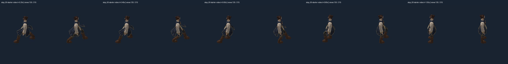

Godot is the shipping target; Pixi is the test harness. The six representative clips preserve the selected source through lossless normal chunks. 1,152/1,152 render comparisons pass. Complete live locomotion and combat timing remain unqualified.
Each video holds its first pose for 0.2 seconds, plays the 0.8-second transition, then holds the endpoint. Replay restarts outside the clip. The cache is warmed before recording. The top row has a 50-pixel body axis; the bottom is freshly rendered at 150 pixels. These are native renders, not enlarged screenshots. Scroll horizontally for all eight headings: 0°, 45°, 90°, 135°, 180°, 225°, 270°, 315°.
Video-derived samples below show headings 135° and 315°. Lossy video samples support visual inspection; the separate deterministic audit verifies all 294 stored frames, including six endpoints.

| Evidence | Result and scope |
|---|---|
| Source and bounds | 294 pose checks; 4,704 view/scale bounds pass. Minimum image margin 31.54 px. Paired gear core clearance ≥7.52 mm; full garment surface fit remains open. |
| Pixel agreement | Worst MAE 0.01380; worst fraction above 8 is 0.000920. Limits remain 1 and 0.02. Same diffuse renderer for independent source oracle and runtime skinning; no Cycles/PBR equivalence claim. |
| Negative controls | Wrong pose and shifted gear are detected. Missing corrections on the selected transition pose do not exceed the pixel threshold: an insensitive visual control, preserved. Missing chunks, corruption, truncation, invalid hashes and sizes are rejected. |
| Packaging | Six lossless chunks: 37.534 MB decoded, 25.967 MB encoded. Maximum two-chunk bound 12.598 MB. Measured cache accounting is not total browser/GPU residency. |
| Playback | Eight saved clips reach their endpoints; 294 deterministic renders have no GL errors. Local browser fetch/decode/hash loads took about 30–39 ms. No minimum-PC performance claim. |
Codex visual assessment: foot reposition and anatomy remain readable in the inspected clips; no severe knee flips or detached gear seen. The coat is still stiff and angular. This is a working transition proof, not a complete painted pilot or production motion approval.
The original knee-continuity failure and monolithic export failure remain available. The normal-ablation result above is not relabelled as a pass.
Report · Receipt · Engine-neutral manifest · Pixel measurements · Frame audit · Live diagnostic fixture (local server)